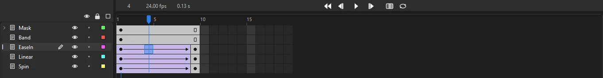

Get started
Your first animation
In about ten minutes you will draw a ball, send it across the stage with a tween, ease its motion, and export a video. Each step links to the page that covers it in depth.
1. Create a document
- Choose (Ctrl+N), or pick a size on the start screen.
- Under Character Animation, click HD (1280×720 at 24 frames per second), then Create.
The white rectangle in the middle of the window is the stage: whatever is on it ends up in your video. Everything else is the workspace.
2. Draw a ball
- Press O to pick the Oval tool.
- In the Tools panel, click the fill swatch and choose a bright color. To draw the ball without an outline, uncheck Stroke under Color and Style on the Properties panel's Tool tab.
- Hold Shift and drag near the left edge of the stage to draw a circle.
Hold Alt as well to draw the circle outward from where you first pressed.
3. Turn the ball into a symbol
Tweens move whole objects, so the ball needs to become a symbol.
- Press V for the Selection tool and double-click the ball, which selects its fill and its outline together.
- Press F8. In Convert to Symbol, name it Ball, leave the type as Graphic, and click OK.
The ball is now an instance of the Ball symbol, and the symbol is listed in the Library.
4. Add a second keyframe
- In the timeline, click the cell under frame 24 on the ball's layer.
- Press F6 to insert a keyframe. The frames between 1 and 24 fill in gray, showing that the ball is held across them.
- With the playhead still on frame 24, drag the ball to the right side of the stage.
5. Tween between the keyframes
- Right-click any frame between 1 and 24 and choose Classic Tween. The span turns lilac with an arrow, which means Phoenix is calculating the in-between frames for you.
- Press Enter to play. Press it again to stop.

6. Ease the motion
Real objects speed up and slow down. Click a frame inside the tween, then on the Properties panel's Frame tab, open the Ease list and choose an In Out preset. Play again and the ball now starts gently and settles into place. See Easing for all the presets and the custom curve editor.
7. Check it with onion skinning
Turn on onion skinning with the button next to the transport controls in the timeline header, or Alt+Shift+O. The frames before the playhead show in blue and the frames after it in green, so you can see the spacing of the ball's motion at a glance.
8. Save and export
- Choose (Ctrl+S). New documents save as Phoenix documents (
.phx) unless you choose another format under . To share it as an FLA file, use and choose FLA. - Choose , set Format to Video and Codec to H.264 (MP4), and click Export.
Video export uses ffmpeg. If Phoenix cannot find it, it asks where it is once and remembers. See Exporting for GIF, PNG sequences and the other formats.